Based on notes by David G. Sullivan
➔ noSQL
Sadalage and Fowler, NoSQL Distilled
(Addison-Wesley, 2013).
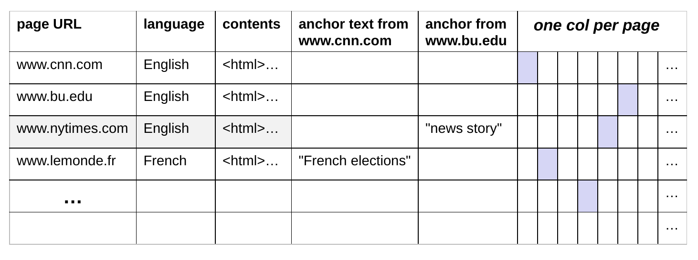
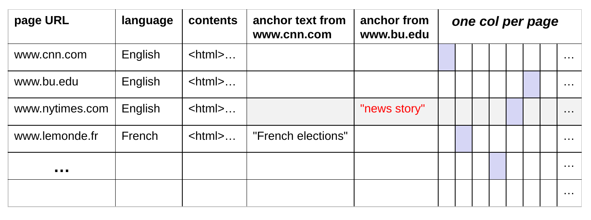
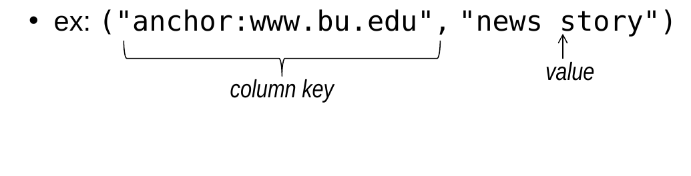
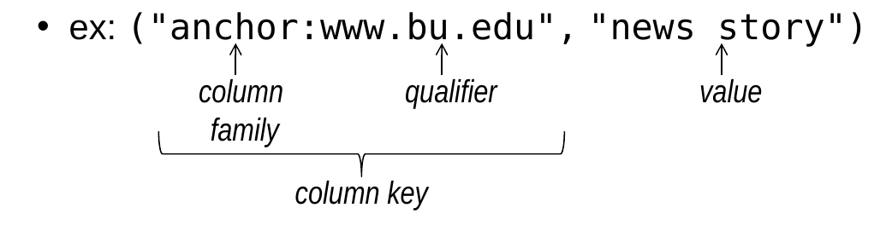
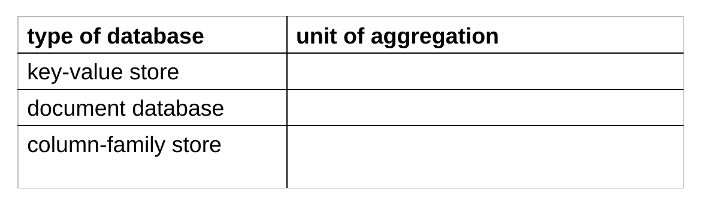
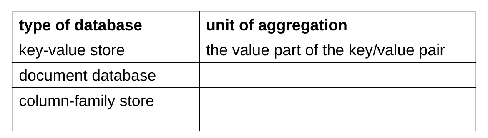
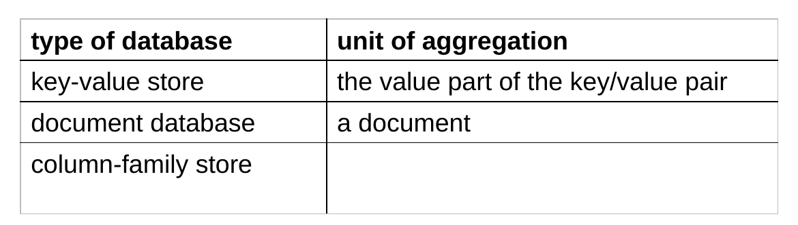
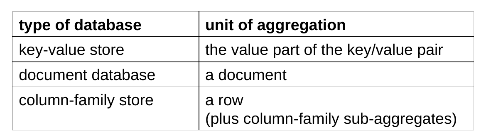
{ firstName: "John",
lastName: "Smith",
age: 25,
address: {
streetAddress: "21 2nd Street",
city: "New York",
state: "NY",
postalCode: "10021"
},
phoneNumbers: [
{ type: "home",
number: "212-555-1234"
},
{ type: "mobile",
number: "646-555-4567"
}
]
}firstName, lastName, ageaddressphoneNumbers_id Field_id field.
_id field:
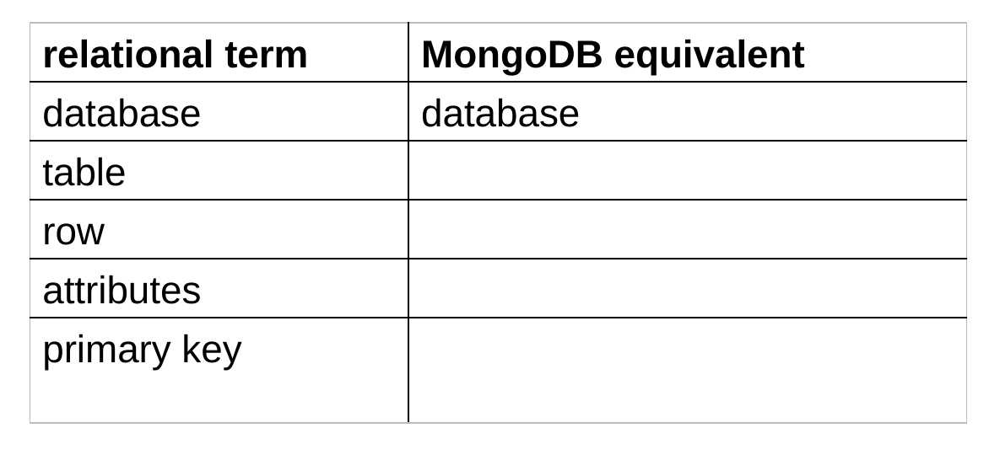
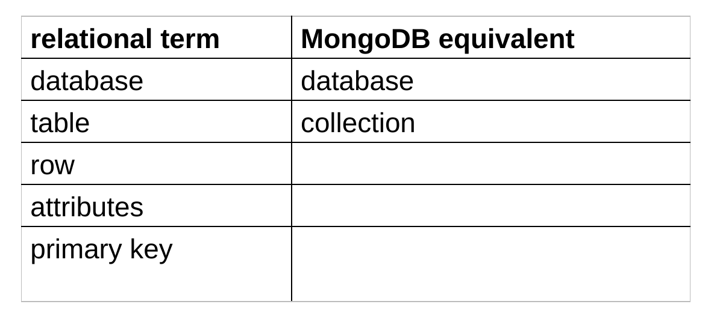
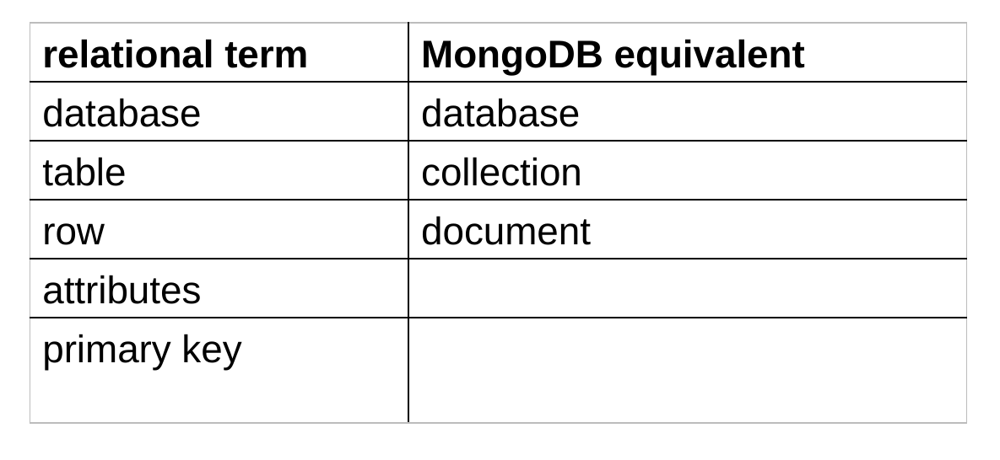
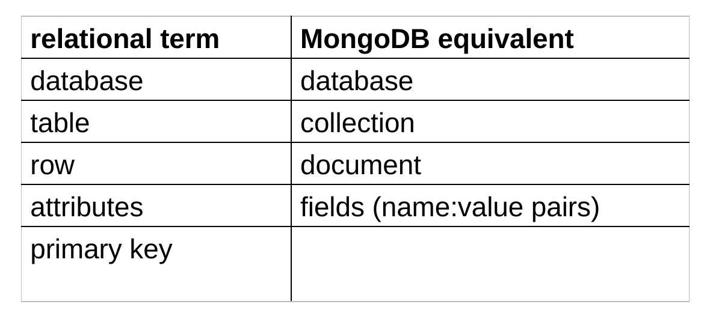
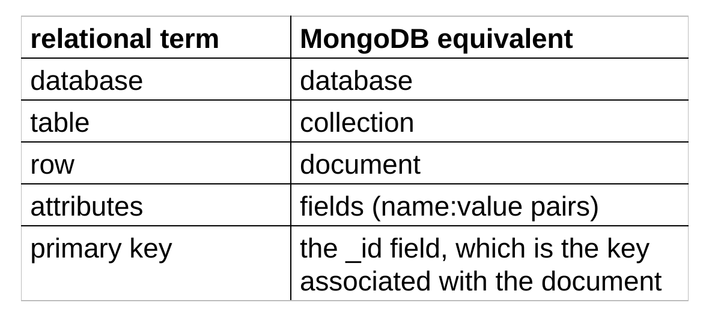
_id values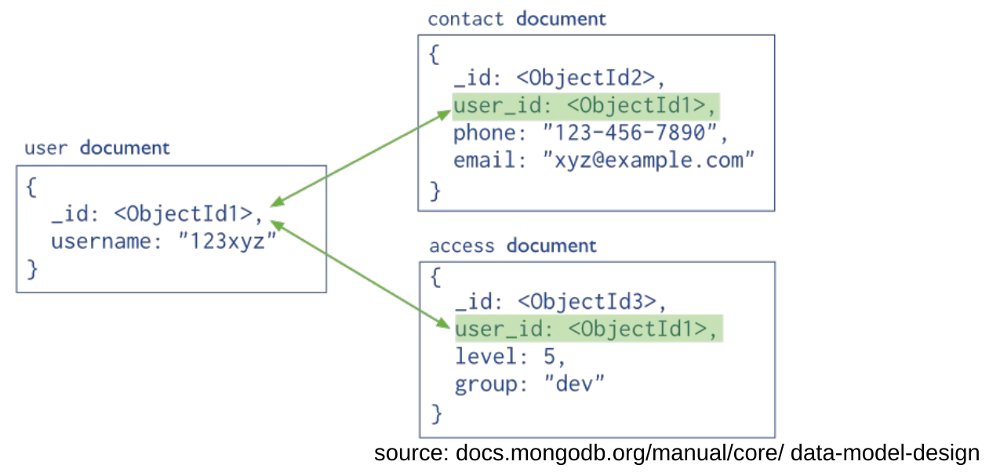
where have we seen this before?
foreign keys
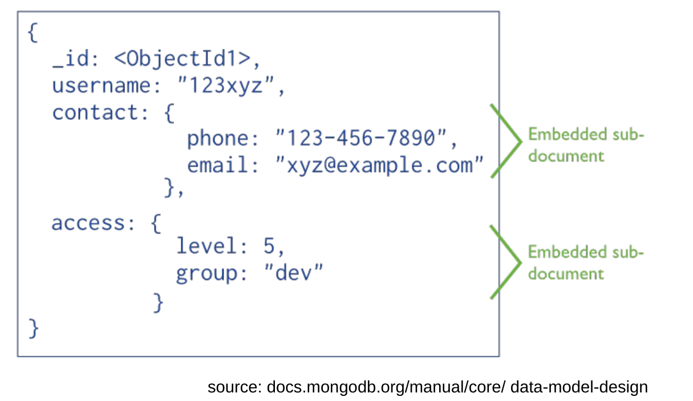
➔ group together data that would otherwise need to be joined
➔ use references if embedded documents could lead to significant growth in the size of the document over time
Person(id, name, dob, pob)
Movie(id, name, year, rating, runtime, genre, earnings_rank)
Oscar(movie_id, person_id, type, year)
Actor(actor_id, movie_id) Director(director_id, movie_id)
common: Who directed Avatar?
common: Which movies did Tom Hanks act in?
less common: Which movies have actors from Boston?
{ _id: "0499549",
name: "Avatar",
year: 2009,
rating: "PG-13",
runtime: 162,
genre: "AVYS",
earnings_rank: 1,
actors: [ { id: "0000244",
name: "Sigourney Weaver" },
{ id: "0002332",
name: "Stephen Lang" },
{ id: "0735442",
name: "Michelle Rodriguez" },
{ id: "0757855",
name: "Zoe Saldana" },
{ id: "0941777",
name: "Sam Worthington" } ],
directors: [ { id: "0000116",
name: "James Cameron" } ] }